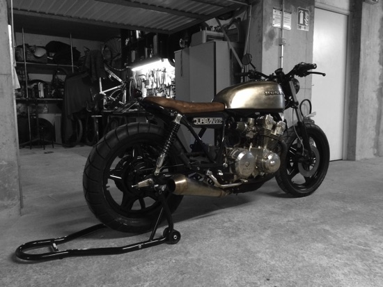

Parce que les bécanes d'aujourd'hui n'ont pas d'âme et que celles d'hier manquent de style!
Passionné de 2 roues et de mécanique depuis toujours, je crée des motos simples, belles et efficaces dans mon atelier de Collonges sous Salève. Vous trouverez en cliquant sur l'image ci-dessous les photos de ma toute première réalisation.
Celle-ci est ma bécane personnelle, je l'utilise quotidiennement, mais qui sait? la prochaine sera peut-être la vôtre!
Projet DURBAN#1
